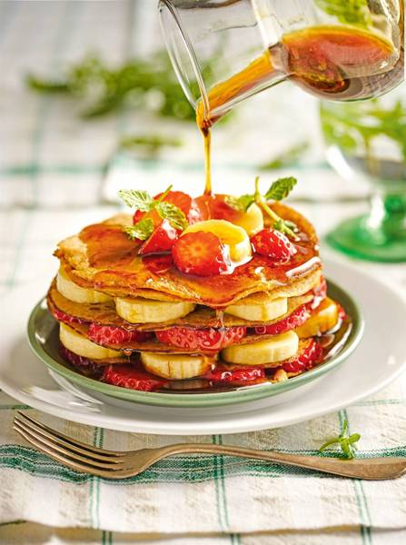
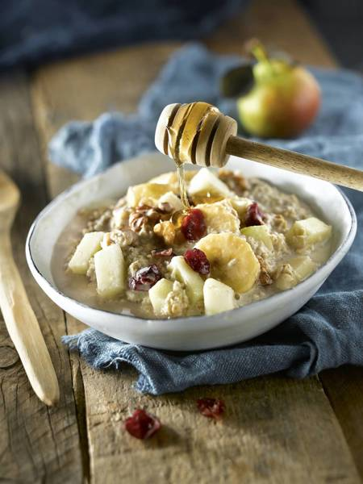
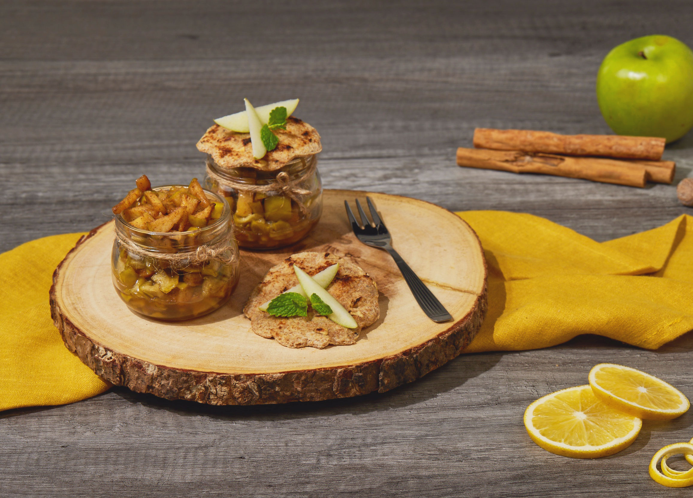
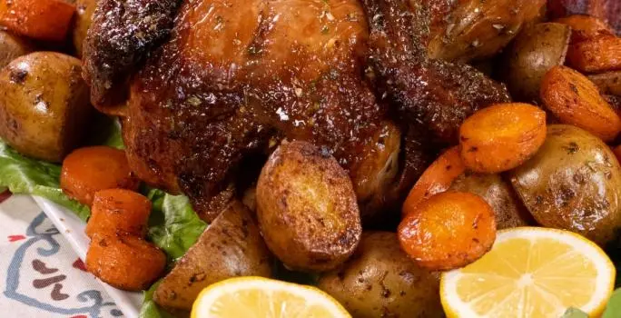
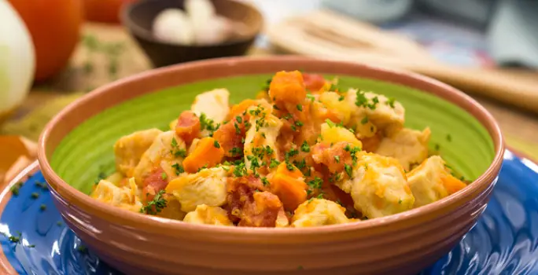
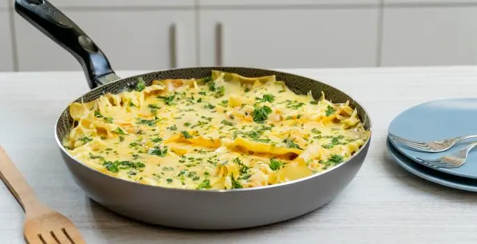
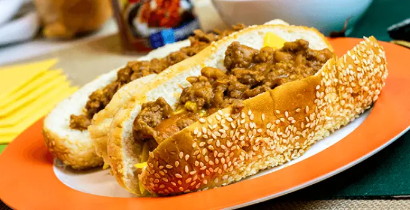

Recetas
Tortitas de avena con plátano
Ingredientes
- 5 cucharadas de harina de avena
- 100 gramos de fresas
- 75 ml de leche vegetal
- 2 cucharadas de miel
- ½ cucharadita de levadura
- 2 cucharadas de azúcar moreno
- Canela
- 1 huevo
- 2 plátanos
- Mantequilla
- ½ cucharadita de esencia de vainilla
- Sal
Muesli de avena con arándanos
Ingredientes
- 160 gramos de copos de avena gruesos
- 1 manzana tipo Golden
- 1 plátano
- 1 pera
- 1 cucharada de jugo de limón
- 30 gramos de nueces
- 500 ml de leche de coco (o yogur de soja)
- 30 gramos de arándanos rojos deshidratados
- 2 cucharaditas de concentrado de manzana
Recetas
Mini tarta de manzana en tarro
Ingredientes
- 1/2 manzana verde cortada en cubos
- 1/2 cucharadita de jengibre finamente picado
- 1/2 cucharadita de canela en polvo
- 1/4 de cucharadita de clavo en polvo
- 1 cucharadita de jugo de naranja
- 1 cucharadita de miel de abeja
- 1 rebanada de Pan Bimbo Vital Manzana
- 1/2 cucharadita de azúcar mascabado
- Mantequilla en aerosol
- Yema para barnizar
Pollo al Horno con Verduras
Ingredientes
- 1 pollo entero mediano (aprox 5 lbs)
- 1 sobre de Jugoso al Horno MAGGI®
- 1 cucharada de aceite de oliva
- 1 taza de papines cortados a la mitad
- 1 taza de zanahoria en rodajas
- 2 cdtas de Naturísimo MAGGI®
Receta de pollo guisado
Ingredientes
- (454 g) 1 Libra Pechuga De Pollo sin hueso ni piel, cortada en cubos
- (10 g) 1 Sobre Consomé De Pollo Maggi®
- (15 g) 1 Cucharada Aceite De Oliva
- (16 g) 4 Dientes Ajo cortados finamente
- (130 g) 1 Taza Cebolla cortada finamente
- (230 g) 1 3/4 Taza Papas cortadas en dados
- (230 g) 1 3/4 Taza Zanahorias cortadas en dados
- (340 g) 1 1/2 Taza Tomate sin piel
- 1 Pizca Pimienta Negra Molida
Recetas
Lasaña en Sartén
Ingredientes
- 1 Cucharada de aceite de oliva
- 1 Taza de cebolla cortada finamente
- 1 Taza Zanahorias cortadas en cubitos
- 2 Libras Carne Molida De Res
- 1 sobre de Sazonador de Res Concentrado MAGGI®
- Pimienta molida al gusto
- 1 sobre de Pasta de Tomate MAGGI®
- 1 Taza de agua
- Pasta de Lasaña PRECOCIDA
- Queso Mozzarella NESTLÉ® Qué Rico®
Hot dog con queso y chile
Ingredientes
- 227 Gramos Carne Molida De Res
- 5 Gramos Sal De Mesa Al gusto
- 5 Gramos Pimienta Negra Molida Al gusto
- 1 Cucharada Aceite De Oliva
- 8 Gramos Ajo Cortado finamente
- 75 Gramos Cebolla Blanca Picada finamente
- 355 Gramos Tomate Cortado en cubos pequeños
- 312 Gramos Pork&Beans MAGGI®
- 180 Gramos Queso Amarillo Tipo Americano Nestlé®
- 780 Gramos Pan De Trigo Pan de hot dog
- 540 Gramos Salchichas De Cerdo Y Pavo Hervidas